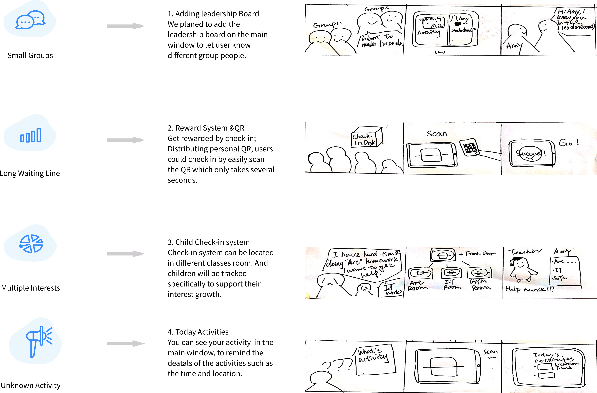

Background
In the past Spring 2018 semester, as a project in Human Computer Interacions II course, our teammates and I completed a UX research and design on kids check-in app for Behind Every Door (BEDM) non-profit organization. BEDM is going to build a Dallas underserved neighborhoods E-community under the help of Koalanauts software team. The kids check-in app is a part of the whole E-community system. Guidance from course mentor and UX designer from Koalanauts, I was responsible for UX process research and whole UI design. Here is my report.
Client's Needs and Onsite Visting
Before the BEDM project started, software developers, UX designers, and BEDM Director had discussed what BEDM needs for the E-community. The whole project includes staff management, community information building and so on.
Here were excerpts of kids check-in app needs:
Need 1: Collect Attendence Data: "...Behind Every Door recognizes the power of data collection, especially in non-profit arena for resource-provisioning and fundraising. It is making a step towards data-driven decisions by creating an IOS iphone (phase 1) app for program attendance."
Need 2: Keep Attendence Rate: "...The drops rate of attendence is high..."
Need 3: Future Leadership Program: "BEDM also wants to post a Future Leadership Program for kids along the publish of information system. Future Leadership Program is an important part in building the community future which included special activities only for kids..."
Need 3: Building Community: "BEDM also wants the ability to post and push events and classes to the community and it is hoped that it is a connection tool for our communities particularly children and young people.
Initial Problem:
*The attendence rate of kids in the underserved Dallas community decreased;
Initial Ideation:
*Adding rewards to each attendence;
*Involving peer comparsion;
*Building culture
After needs discussion, we started our UX research. Here is the research process timeline.
Research Life Cycle
Research Process
After understanding client's needs, we started our onsite visit. In the first onsite visit and interview. Our team organized what we observed and interviewed via affinity diagram.
Affinity Diagram
We synthesized interview data using affinity notes and we categorized the data into behaviors, thoughts, good feelings, and bad feeling.
let's look at 1)kids' check-in experience journey to help us understand what kids do and how they feel during the check-in process.
Pain Points
Through integrating the kids journey on check-in process. We generalized our four pain points
Ideation
Ideation 1: Access Device
Current access device has two options: public and personal access device.
We compared two devices' advantages and shortcuts under BEDM surroundings:
When users going to BEDM, kids prefers to log in and complete check-in process on a public device which is more fair to all the kids. Because not everyone has personal device. A public device like ipad also enhances the probability of social interaction among kids. A public device such as Ipad is the best choice
Ipad Location:
However, in case of waiting too long in the front desk, we decided to have two system: one is for check-in and the other is for viewing personal information.
Ideation 2: Three Main Functions

Based on the initial ideations (such as whether kids are willing to compare with the other), we picked up several task interview results from the whole projects made;
As we can see, kids are willing to check and share their points to the others;